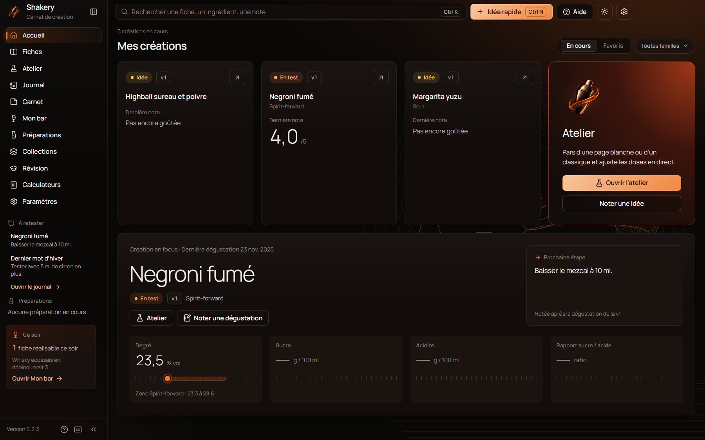

Shakery · refonte ergonomique · planche 01 sur 1024 novembre 2026
Accueil éditorial
Avant

Ce qui change
- Les créations en cours passent d’une grille de cartes à une liste à filets (statut, nom, famille, dernière note, dernière activité), pour qu’elles se lisent d’un coup d’œil comme sur la page Fiches.
- Le bloc Création en focus perd sa carte et reprend la grammaire du mode préparation, avec la famille en petites capitales cuivre, le nom en grand et la méta en colonnes séparées par des filets verticaux.
- Seul le degré, qui a une valeur, garde sa jauge, et une ligne courte explique que le sucre et l’acidité s’afficheront quand les ingrédients auront leurs teneurs, au lieu de trois jauges vides.
- La section À retester reprend les deux prochaines étapes de l’ancienne barre latérale (Negroni fumé et Dernier mot d’hiver), une ligne chacune avec la version qui les a fait naître et un bouton texte Retester, et le lien Ouvrir le journal passe dans son titre.
- Ce soir et Préparations en cours arrivent dans une colonne d’appoint à droite, sans bord, avec des titres en petites capitales grises pour les distinguer des sections principales titrées en cuivre.
- Ce soir affiche le nombre de fiches réalisables en grand et en cuivre, puis l’ingrédient à acheter en premier sur une ligne à filet avec le nombre de fiches qu’il débloque.
- La carte héros Atelier garde son dégradé et porte l’unique bouton plein de l’écran ; le doublon Noter une idée disparaît puisque Idée rapide est dans la barre du haut, et un lien texte Partir d’un classique le remplace.
- Les filtres En cours, Favoris et familles sont retirés parce que l’accueil ne montre que cinq créations, et le lien Toutes mes fiches mène à la page Fiches pour le reste.
- Les valeurs inconnues (famille absente, note pas encore donnée) s’affichent par un petit trait dessiné.
- Le motif de fond de l’accueil passe de 36 % à 12 % d’opacité, parce que sans cartes il croisait le texte des listes.
À trancher
- Faut-il garder l’interrupteur En cours et Favoris sur l’accueil, ou le retirer comme sur la planche et laisser les favoris à la page Fiches ?
- Le Negroni fumé apparaît en focus et en tête de À retester. Préfères-tu exclure la création en focus de la liste À retester ?
- Quand aucune préparation n’est en cours, veux-tu garder la section avec sa phrase d’aide ou la masquer ?
- Le motif de fond à 12 % sur les écrans sans cartes te convient-il, ou préfères-tu garder son intensité actuelle ?